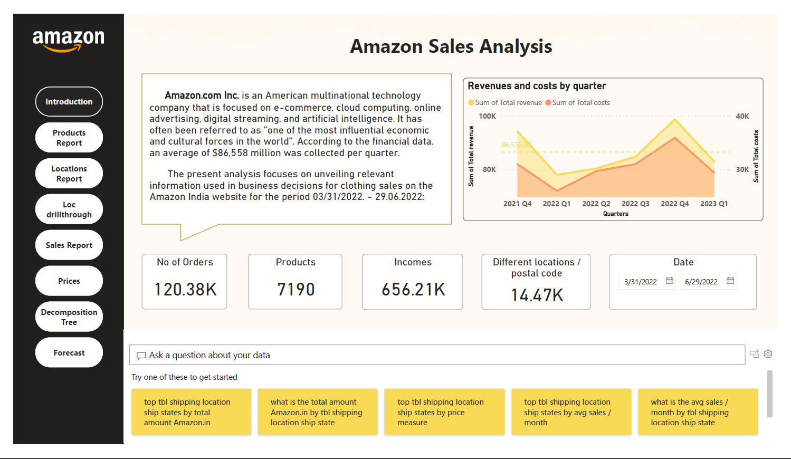

Amazon Sales Analysis
BI project on Amazon India's Q2 2022 sales with a normalized model and Power BI dashboards.
- Dataset: Orders/products (Mar 31–Jun 29, 2022).
- KPIs: Orders, products, revenue, locations; drill‑through by city/state.
- Reports: Introduction, Locations Map, Orders table (drill‑through), Products/Sales, Prices & Promotions, Decomposition Tree, Forecasting.
- Insights: Top categories (Set, Kurta, Western Dress); Maharashtra leads volume; seasonal & promo impacts.